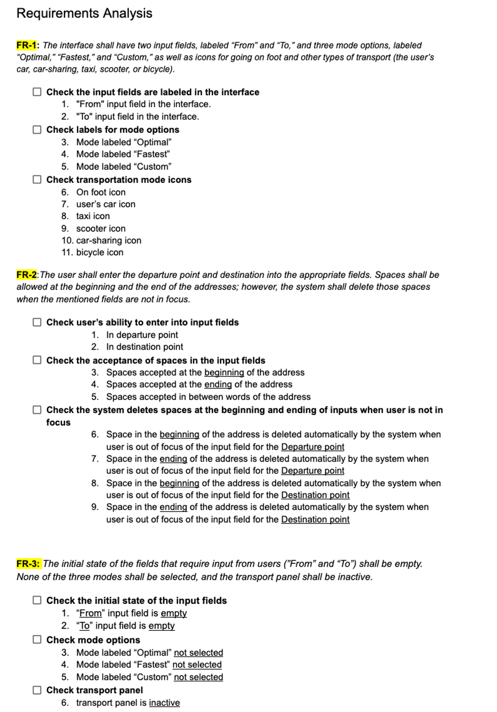
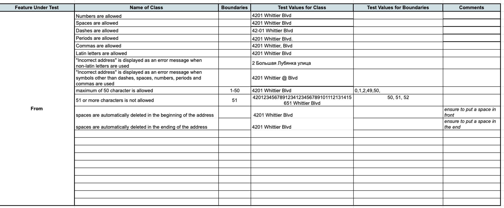

Spring 2024
Requirement Analysis
Upon receiving the requirements from the development team, I conducted a thorough analysis and decomposed them into atomic blocks. This method facilitates the identification of all potential test cases, streamlining the testing process.
Equivalency Partitions & Boundary Values
After reviewing the requirements, I concluded that the testing would involve assessing input boundaries. To organize this, I created a worksheet in Google Sheets to document and categorize the various equivalence partitions and boundary values.
